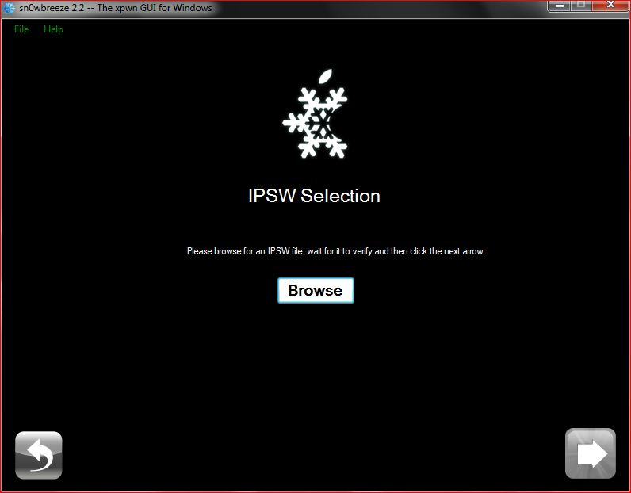
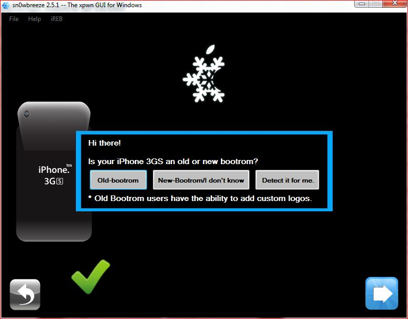
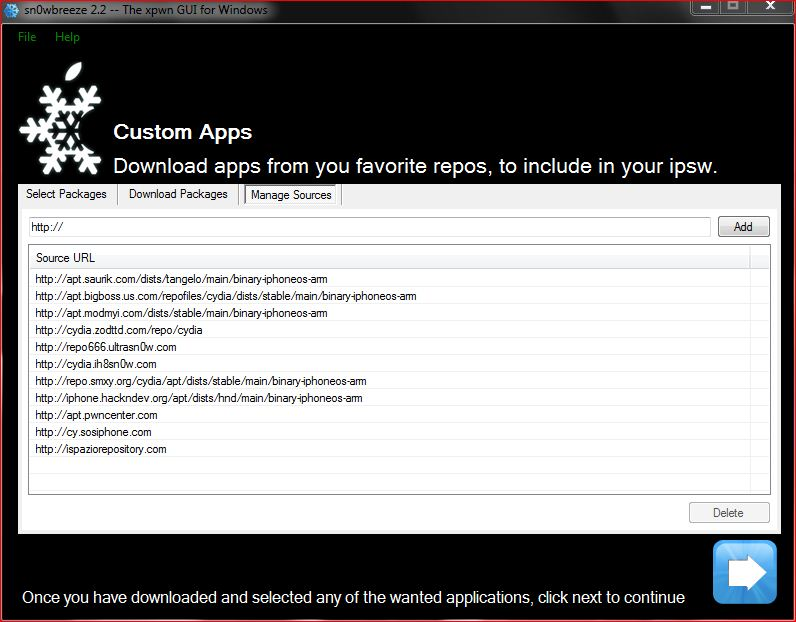

Ecco la guida al Jailbreak di iOS 5.0.1. Prima di cominciare ad eseguire il jailbreak, ecco qualche informazione:
- Come già spiegato in precenza in un altro articolo, si tratta di un Jailbreak Tethered! Ogni volta che riavvierete il Dispositivo, avrete bisogno di iBooty per farlo (e quindi di un pc).
- In questo firmware è stata tappata la falla che permetteva il Jailbreak Untethered di iOS 5.0. Non si sa quando o se verrà rilasciato un Jailbreak Untethered per iOS 5.0.1.
Link per tutti i dispositivi supportati:
Ecco i link al download dei Firmware. Scaricate quello corrispondente al vostro dispositivo (i dispositivi non presenti non sono supportati):
- iPhone 3GS
- iPhone 4 GSM
- iPhone 4 CDMA (Verizon)
- iPhone 4S
- iPad
- iPad 2
- iPod Touch 3° generazione
- iPod Touch 4° generazione
Consigli preliminari
Questi consigli non sono necessari, ma estremamente raccomandati.
- Effettuare un backup con iTunes prima di effettuare qualsiasi operazione.
- Assicurarsi di aver salvato il proprio ecid prima di procedere. Se non sapete come fare seguite questa video-guida (anche se come ho detto sopra al momento non è possibile un Downgrade, potrebbe in futuro essere possibile, quindi è meglio mettersi al sicuro effettuando comunque il salvataggio dell’ecid).
- Dopo aver effettuato il backup con iTunes formattate il vostro iPhone in modo tale da effettuare un installazione più pulita. Dopo aver effettuato il jailbreak ripristinate applicazioni, info, impostazioni ecc. tramite iTunes.
Procedimento
Aprite Sn0wbreeze e verrete subito indirizzati in una Pagina di benvenuto. Andate avanti, saltate i “Crediti” e vi troverete davanti a questa pagina.

Premete sulla Freccia blu, e dovrete a questo punto, selezionare il Firmware 5.0 o 5.0.1, premendo su “Browse“.
A questo punto comincerà ad identificare il Firmware:

A questo punto (solo se avete un iPhone 3GS) vi sarà chiesto se è Old o New Botroom. Nel dubbio selezionate New Bootrom!
{kind=link}
Dopo (o se NON avete un iPhone 3GS), vi ritroverete difronte questa Finestra:
Andate “Avanti”. Vi troverete quindi davanti a questa finestra:

{kind=link}
Qui dovete premere su “Baseband Preservation Mode” se possedete un iPhone Straniero, in modo da preservare la Baseband (SENZA PERO’ ESEGUIRE IL jAILBREAK) , altrimenti premete su “Expert Mode“, se volete eseguire anche il Jailbreak (Sn0wbreeze non upgraderà la vostra Baseband comunque). Premete, quindi, sempre sulla Freccia Blu.

Vi troverete davanti a questa finestra. Qui premete “General” (e poi la Freccia Blu),
e vi troverete davanti questa Finestra:

Una volta aperta la finestra dovrete: Disattivare l’opzione “Activate the iPhone [Hacktivate]” se il vostro telefono è gia attivato (ovvero se non chiede di essere collegato ad iTunes con una SIM Valida), altrimenti lasciarlo con la spunta. Tramite il Pannello “Springboad Modification” a sinistra, potete: Attivare/Disattivare la percentuale della batteria. In “Root Partition Size” consiglio di lasciare quella di Default. A questo punto premete sulla Freccia Blu per andare Avanti.
{kind=link}
Qui potete inserire già da prima i Packages o le Sources di Cydia, in modo da trovarle già inserite. Premete la Freccia, quando avrete finito.
![Sn0wbreeze 2.5.1 fw4.3.1 s7 [GUIDA] Jailbreak del Firmware 4.3.1, 4.3.2 e 4.3.3 con Sn0wbreeze!](../../../../wp-content/uploads/2011/04/Sn0wbreeze_2.5.1_fw4.3.1_s7.jpg) La Finestra sopra serve per installare la Baseband dell’iPad (06.15.00), l’unico modo al momento per rendere possibile lo sblocco della parte telefonica tramite Ultrasn0w, ma estremamente pericolosa; non si sanno infatti gli effetti che potrebbe procurare in futuro.
La Finestra sopra serve per installare la Baseband dell’iPad (06.15.00), l’unico modo al momento per rendere possibile lo sblocco della parte telefonica tramite Ultrasn0w, ma estremamente pericolosa; non si sanno infatti gli effetti che potrebbe procurare in futuro.
{kind=link}
A questo punto premete su “Build IPSW” (e poi sulla Freccia Blu). Si avvierà il processo di Creazione del Custom Firmware, e nel frattempo potrete scegliere se vedere la classica barra di caricamento, oppure giocare a Pac-Man.
![Sn0wbreeze 2.2R3 Schermata11 [GUIDA] Jailbreak del Firmware 4.3.1, 4.3.2 e 4.3.3 con Sn0wbreeze!](../../../../wp-content/uploads/2011/02/Sn0wbreeze_2.2R3_Schermata11.jpg)
Alla fine del processo, salvate in una cartella a vostra scelta il File, aprite iTunes e premete sul tasto “Rispristina”, contemporaneamente tenendo premuto “Shift” sulla tastiera. Scegliete il File IPSW che avevate precedentemente salvato ed aspettate la fine del Ripristino.
Per avviare il dispositivo dovrete usare poi iBooty. Collegate il dispositivo al Pc, mettetelo in DFU Mode (basta seguire i passi riportati da iBooty stesso) e premere l’unico tasto presente nel programma. Il programma adesso lavorerà al fine di eseguire delle procedure per accendere il dispositivo con il Jailbreak. Questa procedura andrà eseguita ogni volta che il dispositivo verrà spento! Al termine vi ritroverete Cydia sulla Springboard.
Fine della Guida 
Se avete domande o perplessità, o volete segnalarmi imperfezioni, lasciate un commento!